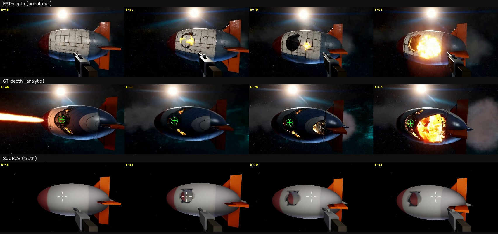

08 · 真值深度:事件级几何的传导实验
起因(用户观察):枪击版 VACE 成片里,起火点和真实弹孔对不上。
诊断:那一发用 preprocess=true——VACE 只对服务端单目估计的深度做条件,
而估计器把船壳上 50-90px 的暗色弹孔读成了涂装,深度图里根本没有洞。结构通道缺失,模型只能按先验自选起火点。
验证方法:自制真值深度控制视频,preprocess=false 直喂,同 seed=42 对照。
真值深度怎么来的(两次失败 + 一次绕道)
引擎捕获路线的三个坑
① SceneDepth 的厘米值被 ExportRenderTarget 按 [0,1] 假设量化——全白,而且文件魔数暴露 .exr 文件名下写的其实是 PNG;
② 换 DeviceDepth 时改的参数只写在"首次创建"分支里,复用的旧 rig 根本没生效(改配置要改活对象,不只是构造代码);
③ stop-motion 下 CaptureScene→Export 有时序竞态,帧里叠着上一姿态的重影椭圆。
索性绕开渲染器:几何(椭球+四鳍+尾锥+弹孔胶囊)与逐帧位姿全在侧车 v7_shot_clip.json 里, 直接 numpy 解析光线投射渲染深度——椭球二次求交、鳍薄板三角求交、尾锥圆锥求交、 弹孔按雕刻胶囊做穿透(近壳镂空 → 映出远壳)。渲染器完全不在环里,深度纯粹从参数导出。 洞在 t=1.8(第46帧)准时出现、极性正确、随相机有正确视差、零重影。

同 seed 三发对照 · 判决图

结论:事件级几何只有真值深度带得动,但深度带不动外观
1. 用户的观察成立且归因明确:单目深度估计抹掉小尺度几何 → 估计深度版的起火点是模型编的。
2. 真值深度把事件钉回了原位:损伤/火光全程锚在真实弹孔区域(112px@k58,vs 估计版的跨半船游走)—— 弹孔的深度断崖是硬写进控制信号的,模型确实服从了。
3. 代价:深度通道不携带反照率。真值版的船体被渲成深蓝色、k48 还自作主张给鼻尖加了尾焰—— 只有深度+参考图撑不住外观保真。生产配方应是分层的:外观找 Seedance/估计深度版,事件几何找真值深度版, 或者等支持深度+RGB 复合控制的端点。
4. 工程尾巴:开火帧的雕刻+重网格是重帧,真实帧率不均匀,而 mp4 按平均 fps 装配—— 帧号→回放时间的映射在事件后失准(判决图为此给两行用了各自的时间基)。下一版侧车要记逐帧墙钟时间。
08 收官,管线阶梯到顶:参数 → RGB → 估计深度 → 解析真值深度,每一级的信息损失都被量化过。 RGB + 真值深度 + 全参数 JSON 的三件套配对样本,从此一条命令可产。